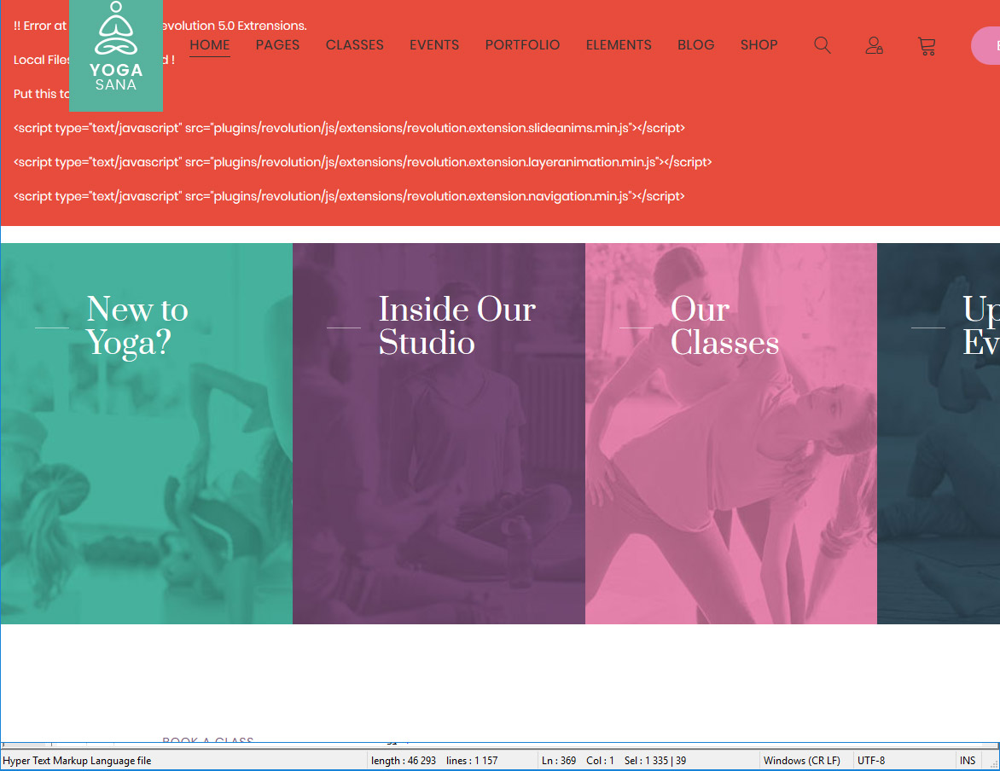
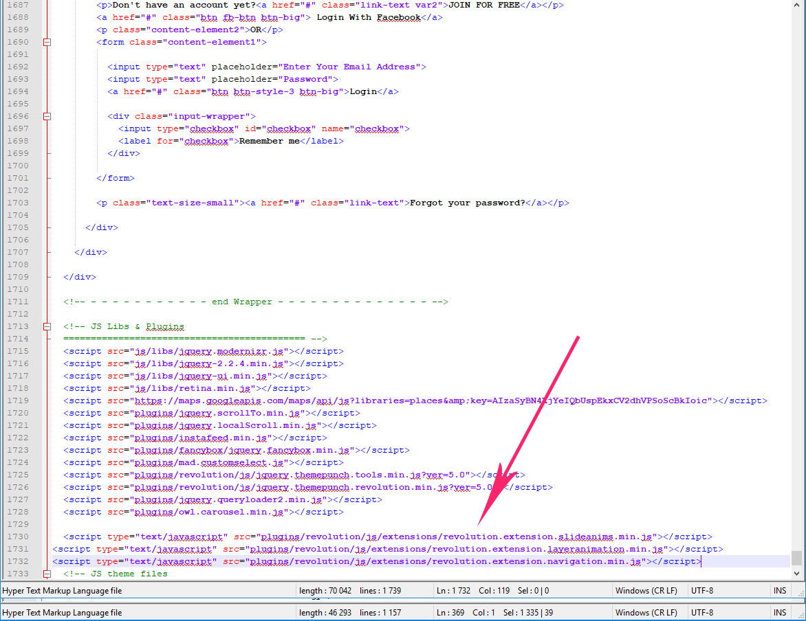

JogaSana - Yoga Oriented
HTML Template
Thank you for purchasing my theme. If you have any questions that are beyond the scope of this help file, please feel free to contact us via Ticksy Support System. Thanks so much!
The template has 54 HTML and 54 RTL HTML files:
-
404_page.html
-
about_me.html
-
about_us.html
-
blog_classic.html
-
blog_masonry.html
-
blog_single.html
-
blog_small.html
-
challenge_single.html
-
challenges.html
-
classes.html
-
classes_desc.html
-
classes_schedule.html
-
classes_single.html
-
coming_soon.html
-
contact.html
-
contact_me.html
-
events_list.html
-
events_masonry.html
-
events_month.html
-
events_single.html
-
faq.html
-
home_2.html
-
home_3.html
-
home_4.html
-
home_5.html
-
index.html
-
portfolio_2_col.html
-
portfolio_3_grid.html
-
portfolio_gallery.html
-
portfolio_instagram.html
-
portfolio_masonry.html
-
portfolio_single_big.html
-
portfolio_single_small.html
-
pricing.html
-
shop_account.html
-
shop_cart.html
-
shop_category.html
-
shop_checkout.html
-
shop_single.html
-
shortcodes_accordions.html
-
shortcodes_buttons.html
-
shortcodes_call_to_action.html
-
shortcodes_counters.html
-
shortcodes_dividers.html
-
shortcodes_dropcaps.html
-
shortcodes_headings.html
-
shortcodes_icons.html
-
shortcodes_tables.html
-
shortcodes_tabs.html
-
shortcodes_team.html
-
shortcodes_testimonials.html
-
shortcodes_tooltips.html
-
team.html
-
team_member.html
<!doctype html>
<html lang="en">
<!-- Google Web Fonts
================================================== -->
<!-- Basic Page Needs
================================================== -->
<title>Yoga</title>
<!--meta info-->
<!-- Mobile Specific Metas
================================================== -->
<!-- Vendor CSS
============================================ -->
<!-- CSS theme files
============================================ -->
</head>
<body>
<div class="loader"></div>
<!--cookie-->
<!-- - - - - - - - - - - - - - Wrapper - - - - - - - - - - - - - - - - -->
<!-- - - - - - - - - - - - - Mobile Menu - - - - - - - - - - - - - - -->
<!-- - - - - - - - - - - - - - Header - - - - - - - - - - - - - - - - -->
<!-- navigation sidebar -->
<!-- Menu -->
<!-- top-header -->
<!-- logo -->
<!-- - - - - - - - - - - - / Mobile Menu - - - - - - - - - - - - - -->
<!--main menu-->
<!-- - - - - - - - - - - - - - Navigation - - - - - - - - - - - - - - - - -->
<!-- - - - - - - - - - - - - end Navigation - - - - - - - - - - - - - - - -->
<!-- - - - - - - - - - - - - end Header - - - - - - - - - - - - - - - -->
<!-- - - - - - - - - - - - - - Content - - - - - - - - - - - - - - - - -->
<!-- Page section -->
<!-- Page section -->
<!-- - - - - - - - - - - - - - Icon Box Item - - - - - - - - - - - - - - - - -->
<!-- - - - - - - - - - - - - - Icon Box Item - - - - - - - - - - - - - - - - -->
<!-- - - - - - - - - - - - - - Icon Box Item - - - - - - - - - - - - - - - - -->
<!-- Page section -->
<!-- - - - - - - - - - - - - - Entry - - - - - - - - - - - - - - - - -->
<!-- - - - - - - - - - - - - - Entry attachment - - - - - - - - - - - - - - - - -->
<!-- - - - - - - - - - - - - - Entry body - - - - - - - - - - - - - - - - -->
<!-- - - - - - - - - - - - - - Entry - - - - - - - - - - - - - - - - -->
<!-- - - - - - - - - - - - - - Entry attachment - - - - - - - - - - - - - - - - -->
<!-- - - - - - - - - - - - - - Entry body - - - - - - - - - - - - - - - - -->
<!-- - - - - - - - - - - - - - Entry - - - - - - - - - - - - - - - - -->
<!-- - - - - - - - - - - - - - Entry attachment - - - - - - - - - - - - - - - - -->
<!-- - - - - - - - - - - - - - Entry body - - - - - - - - - - - - - - - - -->
<!-- - - - - - - - - - - - - - Entry - - - - - - - - - - - - - - - - -->
<!-- - - - - - - - - - - - - - Entry attachment - - - - - - - - - - - - - - - - -->
<!-- - - - - - - - - - - - - - Entry body - - - - - - - - - - - - - - - - -->
<!-- Page section -->
<!-- - - - - - - - - - - - - - Testimonial - - - - - - - - - - - - - - - - -->
<!-- /Carousel Item -->
<!-- - - - - - - - - - - - - - Testimonial - - - - - - - - - - - - - - - - -->
<!-- /Carousel Item -->
<!-- - - - - - - - - - - - - - Testimonial - - - - - - - - - - - - - - - - -->
<!-- /Carousel Item -->
<!-- Page section -->
<!-- - - - - - - - - - - - - - Entry - - - - - - - - - - - - - - - - -->
<!-- - - - - - - - - - - - - - Entry attachment - - - - - - - - - - - - - - - - -->
<!-- - - - - - - - - - - - - - Entry body - - - - - - - - - - - - - - - - -->
<!-- - - - - - - - - - - - - - Entry - - - - - - - - - - - - - - - - -->
<!-- - - - - - - - - - - - - - Entry attachment - - - - - - - - - - - - - - - - -->
<!-- - - - - - - - - - - - - - Entry body - - - - - - - - - - - - - - - - -->
<!-- - - - - - - - - - - - - - Entry - - - - - - - - - - - - - - - - -->
<!-- - - - - - - - - - - - - - Entry attachment - - - - - - - - - - - - - - - - -->
<!-- - - - - - - - - - - - - - Entry body - - - - - - - - - - - - - - - - -->
<!-- Page section -->
<!-- Page section -->
<!-- Page section -->
<!-- - - - - - - - - - - - - end Content - - - - - - - - - - - - - - - -->
<!-- - - - - - - - - - - - - - Footer - - - - - - - - - - - - - - - - -->
<!-- main footer -->
<!-- - - - - - - - - - - - - end Footer - - - - - - - - - - - - - - - -->
<!-- - - - - - - - - - - - end Wrapper - - - - - - - - - - - - - - -->
<!-- JS Libs & Plugins
============================================ -->
<!-- JS theme files
============================================ -->
</body>
</html>
https://fonts.google.com/specimen/Prata
For sure you can change fonts. Select needed fonts, and copy embed code on our pages
You can see commented code
<!-- Google Web Fonts
================================================== -->
<link href="https://fonts.googleapis.com/css?family=Poppins:300,400,500,600,700%7CPrata" rel="stylesheet">
Replace our code with yours
After open css/style.css and make auto-replace
font-family: 'Poppins', sans-serif;
with your font
Create a logo with logo.png and replace it at images folder. For better view see my logo width
If you open your site locally and see such error

Don't worry. if you are testing on local server you need to include extensions of revolution slider (you do not need to include on live server).
Add this after revolution slider script (at the bottom of page)
<script type="text/javascript" src="plugins/revolution/js/extensions/revolution.extension.slideanims.min.js"></script>
<script type="text/javascript" src="plugins/revolution/js/extensions/revolution.extension.layeranimation.min.js"></script>
<script type="text/javascript" src="plugins/revolution/js/extensions/revolution.extension.navigation.min.js"></script>

This template uses 8 css files:
-
audioplayer.css
-
bootstrap.min.css
-
fontello.css
-
owl.carousel.css
-
owl.theme.css
-
owl.transitions.css
-
responsive.css
-
style.css
The main style.css has such structure:
/* ----------------------------------
1. Reset default browser styles
2. Global
3. General classes
4. Typography
5. Header
6. Content Elements
7. UI Elements
7.1. Buttons
7.2. Forms
7.2.1. Inputs & Textarea
7.2.2. Label & Legend
7.2.3. Checkbox & Radio
7.2.4. Select
7.2.5. Fieldset
7.2.6. Form variations
7.3. Tables
7.4. Lists
7.5. Blockquotes
7.6. Dividers
8. Widgets & Shortcodes
8.1. Twitter Feed
8.2. Instagram Feed
8.3. LightBox
8.5. Accordions & Toggles
8.6. Alert boxes
8.7. Callouts
8.8. Pagination
8.9. Dropcaps
8.10. Icon Boxes
8.11. Testimonials
8.12. Carousel Sliders
8.13. Progress Bars
8.14. Pricing Tables
8.15. Counters
8.16. Tabs & Tour Sections
8.17. Isotope
8.18. Team Members
8.19. Google Map
8.20. Services
8.21. Countdown
8.22. Audio Player
9. Blog
9.1. Entries
10. Portfolio
11. Shop
12. Sidebar
13. Footer
-------------------------------------*/
This template includes 21 Javascript files.
-
jquery-2.2.4.min.js
-
jquery-ui.min.js
-
jquery.modernizr.js
-
retina.min.js
-
plugins.js
-
script.js
-
audioplayer.js
-
bootstrap.js
-
elevatezoom.min.js
-
instafeed.min.js
-
isotope.pkgd.min.js
-
jquery.countdown.min.js
-
jquery.localScroll.min.js
-
jquery.queryloader2.min.js
-
jquery.scrollTo.min.js
-
mad.customselect.js
-
owl.carousel.min.js
-
jquery.fancybox.js
-
jquery.themepunch.revolution.min.js
-
jquery.themepunch.tools.min.js
-
jquery.tweet.js
If you want to change slider settings, for example, you want switch on/off autoslideshow or change time delay you can find all slider settings here js/script.js
We use Revolution slider. How to adjust this slider you can read here https://www.themepunch.com/revsliderjquery-doc/slider-revolution-jquery-5-x-documentation/
For carousels we use OwlCarousel. Full Documentation you can find here https://owlcarousel2.github.io/OwlCarousel2/docs/started-welcome.html
For example you want to change speed on Revslider and remove arrows. Open my js/script.js and search commented code
/* ---------------------------------------------------- */
/* Revolution slider */
/* ---------------------------------------------------- */
if ($('#header').hasClass('fixed-header')) {
if ($('#rev-slider').length) {
jQuery("#rev-slider").revolution({
sliderType:"standard",
spinner: "spinner3",
responsiveLevels: [4096,1024,778,480],
delay:6000,
sliderLayout:"fullscreen",
navigation: {
bullets:{
style:"",
enable: true,
container: "slider",
hide_onmobile: false,
hide_onleave: false,
hide_delay: 200,
hide_under: 0,
hide_over: 9999,
tmp:'<span class="circle-bullet"></span>',
direction:"vertical",
space: 5,
h_align: "right",
v_align: "center",
h_offset: 40
}
},
gridwidth:1370,
});
}
Delay: 6000 means 6 seconds per slide. If you wnt 8 seconds, write 8000. Arrows:{ Enable:true means that show arrows. Replace with false and you hide arrows. All parameters you can find in offisial documentations. Links are above
When your users load a page, retina.js checks each image on the page to see if there is a high-resolution version of that image on your server. If a high-resolution variant exists, the script will swap in that image in-place. Read more here: http://imulus.github.io/retinajs/
If you want to remove page loader remove this code in HTML
<div class="loader"></div>
Open js/script.js and search
/* ---------------------------------------------------- */
/* Google Maps */
/* ---------------------------------------------------- */
if ($('#googleMap').length) {
$(document).ready(function() {
var myCenter = new google.maps.LatLng(30.2259488, -97.7145152);
function loadMap() {
var mapProp = {
center: myCenter,
zoom:13,
mapTypeId:google.maps.MapTypeId.ROADMAP
};
var map = document.getElementById('googleMap');
if(map !== null){
var map = new google.maps.Map(document.getElementById("googleMap"),mapProp);
}
Change coordinates. You can generate new coordinates here
https://www.gps-coordinates.net/
I've used the following scripts:
-
-
jquery-ui.min.js - a curated set of user interface interactions, effects, widgets, and themes built on top of the jQuery JavaScript Library
-
jquery.modernizr.js - a small piece of JavaScript code that automatically detects the availability of next-generation web technologies in your user's browsers
-
retina.min.js - an open source script that makes it easy to serve high-resolution images to devices with retina displays
-
plugins.js - custom js
-
script.js - custom js with plugin's settings
-
audioplayer.js - Responsive and Touch-Friendly audio player
-
bootstrap.js - Bootstrap's components to life with over a dozen custom jQuery plugins
-
-
-
jquery.countdown.min.js - jQuery plugin that sets a div or span to show a countdown to a given time
-
jquery.localScroll.min.js - Animated anchor navigation made easy with jQuery
-
-
jquery.scrollTo.min.js - Lightweight, cross-browser and highly customizable animated scrolling with jQuery
-
owl.carousel.min.js - Touch enabled jQuery plugin that lets you create a beautiful responsive carousel slider
-
sticky-sidebar.js - Glues your website's sidebars, making them permanently visible while scrolling
-
jquery.fancybox.js - a tool for displaying images, html content and multi-media in a Mac-style "lightbox" that floats overtop of web page
-
jquery.themepunch.revolution.min.js - the highly acclaimed slide-based displaying solution, thousands of businesses, theme developers and everyday people use and love!
-
Clipart for the preview was bought from http://depositphotos.com and https://unsplash.com/
IMPORTANT: clipart is not included in the stock file.
Once again, thank you so much for purchasing this theme. As I said at the beginning, I'd be glad to help you if you have any questions relating to this theme. No guarantees, but I'll do my best to assist. If you have a more general question relating to the themes on ThemeForest, you might consider visiting http://velikorodnov.ticksy.com and asking your pre-sale question in the "Item Discussion" section.
Monkeysan